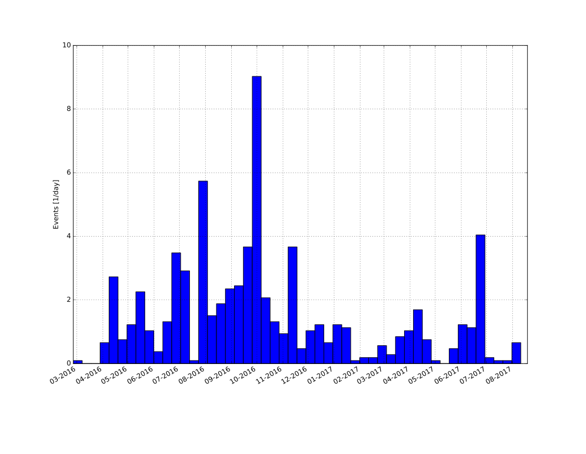

class: center, middle # Recent and future evolution of the Web Audio API Paul Adenot <span class="big logo">mozilla</span> Web Audio Conference 2017 Queen Mary University, London --- # Agenda ## What's new since WAC'16? ## Where are we in the standardization process? ## What's coming up? --- class: middle # HOWTO ```sh $ cd ~/src/repositories/web-audio-api/ $ git checkout gh-pages $ git pull $ git diff --stat @{2016-04-04}..@{2017-08-23} ``` --- class: center, middle <iframe src="changes.html"></iframe> --- class: middle # in details ```sh $ git log --stat --since=2016-04-04 ``` --- class: middle <iframe src="log.html"></iframe> --- class: middle # commit count ```sh $ git log --since=2016-04-04 | grep "Date:" | wc -l 754 ``` --- class: middle # contributor count ```sh $ git log --color --since=2016-04-04 | grep "Author:" | sort | uniq | wc -l 21 ``` - BBC, Google, Intel, Opera, Microsoft, Mozilla, Noteflight, W3C, etc. - Universities, public research lab - Independant people Tons more discussing on issues ! --- # commit time repartition ```sh $ git log --format="%at" --since=2016-04-04 | python datehist.py `git rev-parse --show-toplevel` ```  --- # Breakdown ## New features ## Breaking changes ## Retro-specification :-( --- # destination has an output ```js var ac = new AudioContext(); [...] // Get a MediaStreamDestinationNode var msdn = ac.createMediaStreamDestination(); // NEW! connect the context destination to something! ac.destination.connect(msdn); // Feed it to a recorder, an RTCPeerConnection... var rec = new MediaRecorder(msdn.stream); ``` --- # Biquad Filter formula change <dl> <dt>Rationale</dt> <dd><a href="https://github.com/WebAudio/web-audio-api/issues/771">https://github.com/WebAudio/web-audio-api/issues/771</a></dd> <dt>Detection of old vs. new filters</dt> <dd><a href="https://github.com/GoogleChrome/web-audio-samples/wiki/Detection-of-lowpass-BiquadFilter-implementation">https://github.com/GoogleChrome/web-audio-samples/wiki/Detection-of-lowpass-BiquadFilter-implementation</a></dd> <dt>Test page</dt> <dd><a href="http://rtoy.github.io/webaudio-hacks/more/biquad/biquad-lowpass-q.html?usedB=true">http://rtoy.github.io/webaudio-hacks/more/biquad/biquad-lowpass-q.html?usedB=true</a></dd> </dl> --- # AudioParam - Nominal ranges - `value` behaviour changed - Introspection: `minValue`, `maxValue`, `defaultValue` --- # Doppler effect is gone - Specification was fundamentaly broken - Behaviour was weird - Usage was minimal - `setVelocity` on `AudioListener` and `PannerNode` --- # Latency and clock correlation <dl class=bigger> <dt><code>AudioContext.baseLatency</code></dt> <dd>latency of the graph processing/buffering caused by sandboxing/etc.</dd> <dt><code>AudioContext.outputLatency</code></dt> <dd>usual audio output latency (audio callback <code>-></code> ear)</dd> <dt><code>AudioContext.getOutputTimestamp()</code></dt> <dd>Correlation between <code>Date.now()</code> (system clock) & <code>AudioContext.currentTime</code> (audio subsystem clock)</dd> </dl> --- # Latency hint ```js new AudioContext({ latencyHint: "interactive" }); new AudioContext({ latencyHint: "playback" }); new AudioContext({ latencyHint: "balanced" }); new AudioContext({ latencyHint: 0.05 /* seconds */ }); ``` <span class=big>Trade CPU/battery usage vs. audio latency</span> Authors can determine the actual latency: ```js var ac = new AudioContext({latencyHint: "playback"}); console.log("Base latency:" + ac.baseLatency); console.log("Audio output latency:" + ac.outputLatency); console.log("Total latency:" + (ac.baseLatency + ac.outputLatency)); ``` --- # PannerNode AudioParam <dl> <dt>A bunch of new <code>AudioParam</code>s on the panner:</dt> <dd><code>PannerNodeposition.{position{X,Y,Z}, orientation{X,Y,Z}}</code></dd> <dt>... and on the <code>AudioListener</code></dt> <dd><code>AudioListener.{position{X,Y,Z},forward{X,Y,Z},up{X,Y,Z}}</code></dd> </dl> <p class=bigger> <em>a-rate</em> parameters on <code>"equal-power"</code> <code>PannerNode</code>, <em>k-rate</em> on <code>"HRTF"</code> nodes. </p> ```js panner.setPosition(1,2,3); panner.positionX.value = 1; panner.positionY.value = 2; panner.positionZ.value = 3; ``` --- # setValueCurveAtTime implicit setValueAtTime ```js ap.setValueCurveAtTime(array, startTime, duration); ``` now does the equivalent of: ```js ap.setValueCurveAtTime(array, startTime, duration); ap.setValueAtTime(array[array.length - 1], startTime + duration); ``` --- # currentTime progression Incremented by a <em>render quantum</em> (128 sample-frames), atomically, without waiting for stable state, at the <em>end</em> of the <em>render quantum</em>. --- # Real constructors ```js var ac = new AudioContext(); var gain1 = ac.createGain(); var gain2 = new GainNode(ac); var buf1 = ac.createBufferSource(2, 128, 44100); var buf2 = new AudioBuffer({ length: 128, channels: 2, sampleRate: 44100 }); // Mono by default var buf2 = new AudioBuffer({ length: 128, sampleRate: 44100}); var pw = ac.createPeriodicWave([1,2,3], [3,2,1]); var pw2 = new PeriodicWave([1,2,3], [3,2,1]); ``` paves the way for subclassing `AudioNode`s. --- # AudioNode dictionnary initialisation Allow to share initialization objects, available for all `AudioNode`s: ```js var ac = new AudioContext; var gain = new GainNode(ac, { gain: 3.0 }); var delay = new DelayNode(ac, { delayTime: 0.3 }); var source = new AudioBufferSourceNode(ac, { buffer: new AudioBuffer(...), playbackRate: 3.0 detune: 700, loop: true }); var osc = new OscillatorNode(ac, { type: "square", detune: 700 }); ``` --- # ConstantSourceNode The equivalent of: ```js var ac = new AudioContext(); var source = new AudioBufferSourceNode(); var gain = new GainNode(); var buffer = new AudioBuffer({length: 1, sampleRate: ac.sampleRate}); buffer.getChannelData(0)[0] = 1.0; source.connect(gain); source.buffer = buffer; ``` and modifying `gain.gain`. ```js var ac = new AudioContext(); var c = new ConstantSourceNode(); c.offset.value = 1000; c.start(ac.currentTime + 3.5); c.stop(); ``` --- class: center, middle # AudioWorklet --- # cancelAndHoldAtTime New `AudioParam` method, that does what it says: ```js var ac = new AudioContext; var gain = new GainNode(ac); gain.gain.setValueAtTime(1.0, ac.currentTime); gain.gain.setTargetAtTime(0.0, ac.currentTime, 0.1); gain.gain.cancelAndHoldAtTime(ac.currentTime + 0.1); // gain.gain.value is some value in between 0.0 and 1.0. ``` --- class: center, middle # MediaStreamAudioSourceNode and MediaElementAudioSourceNode lifetime --- # Allow delaying audio playback In practice, the initial `"suspended" => "running"` transition is allowed to be delayed, this allow knowing there is no audio that is currently being output. More-or-less standardization of Safari's behaviour on mobile, but with more discoverability. --- <small> <h1>MediaStreamTrackAudioSourceNode</h1> </small> New `AudioNode`, allowing to precisely decide which `MediaStreamTrack` of a `MediaStream` is going to be routed to an `AudioContext`: ```js // ms is some MediaStream var ac = new AudioContext(); // route the second audio track of a given MediaStream var mstan = new MediaStreamTrackAudioSourceNode(ac, ms.getAudioTracks()[1]); ``` --- # Configurable sample-rate for AudioContext ```js var ac = new AudioContext({sampleRate: 8000}); ``` Allows lower CPU usage, useful for emulation, lo-fi audio work, and for very specific jobs (like `AudioBufferSourceNode` stiching). --- # Specify AudioBufferSourceNode & DynamicsCompressorNode <dl> <dt><code>AudioBufferSourceNode</code> playback algorithm</dt> <dd><ul> <li><a href=https://webaudio.github.io/web-audio-api/#playback-AudioBufferSourceNode>processing algorithm</a> </li> <li>Subsample-accurate start and looping</li> </li> </dd> <dt><code>DynamicsCompressorNode</code> processing algorithm</dt> <dd> <ul> <li> <a href="https://webaudio.github.io/web-audio-api/#processing">processing algorithm</a> </li> <li> Hard or soft-knee, peak detecting, adaptive release, fixed-lookahead, automatic makeup-gain </li> </li> </ul> </dd> </dl> --- # sequence**<**float**>** instead of Float32Array ```js var ac = new AudioContext(); var real = new Float32Array(2); real[0] = 0.0; real[1] = 0.0; var imag = new Float32Array(2); imag[0] = 0.0; imag[1] = 1.0; var wave = ac.createPeriodicWave(real, imag): ``` vs. ```js var ac = new AudioContext(); var wave = new PeriodicWave({ real: [0,0], imag: [0,1] }); ``` --- # Convenience introspection attribute `MediaStreamAudioSourceNode.mediaStream` and `MediaElementAudioSourceNode.mediaElement`, instead of having to set it as an expando or kept around elsewhere. --- class: middle, center # MediaElementAudioSourceNode channel ordering --- # Route to candidate recommendation - Raymond Toy (Google) is <em>officially</em> editor since April last year - Few big blockers left (last big one was `DynamicsCompressorNode`) - W3C Audio Working Group Re-chartered - CR transition documents - `web-platform-test`s are lacking a bit (good test suites in implementations, interoperable) - Spec issues on Github are tagged `v.next` --- # V.NEXT - Audio encoding/decoding consolidation - In memory compressed audio asssets - `SharedArrayBuffer` + `AudioWorklet` + `wasm` = ❤️ - `AudioContext` in Web Worker - Configurable `AudioParam` rate - Custom HRTF - Pulse/noise oscillator - Expose x-runs - Oscillator phase offset as an audioparam - Frequency domain nodes - Side chain compression - Expander/noise-gain --- class: center,middle # QUESTIONS ? --- # Thanks ! <dl> <dt> Slides </dt> <dd> <a href="https://padenot.github.io/wac-17-slides">https://padenot.github.io/wac-17-slides</a><br> <a href="https://github.com/padenot/wac-17-slides">https://github.com/padenot/wac-17-slides</a> </dd> <dt> Editor's draft of the specification </dt> <dd> <a href="https://webaudio.github.io/web-audio-api">https://webaudio.github.io/web-audio-api</a> </dd> <dt> Specification issue tracker </dt> <dd> <a href="https://github.com/webaudio/web-audio-api/issues/">https://github.com/webaudio/web-audio-api/issues/</a> </dd> <dt>Contribute to tests (running on all implementations)</dt> <dd> <a href="https://github.com/w3c/web-platform-tests/"> https://github.com/w3c/web-platform-tests/ </a> </dd> <dt>Email</dt> <dd><a href="mailto:padenot@mozilla.com"><code>padenot@mozilla.com</code></a></dd> <dt>Twitter</dt> <dd><a href="https://twitter.com/padenot">@padenot</a></dd> </dl>